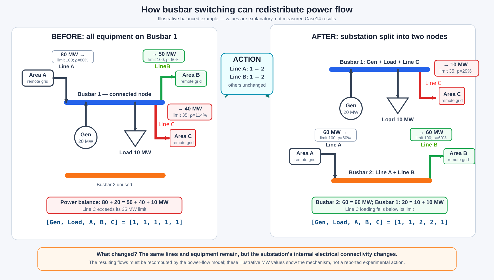
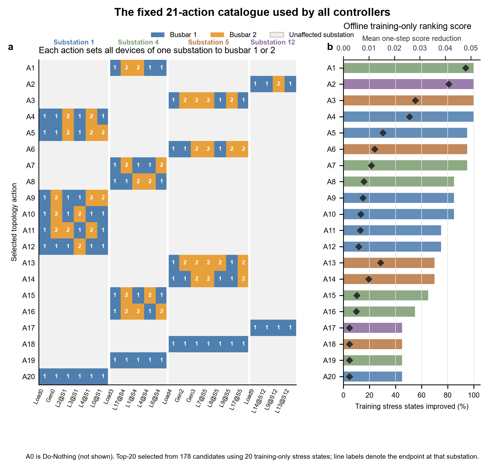
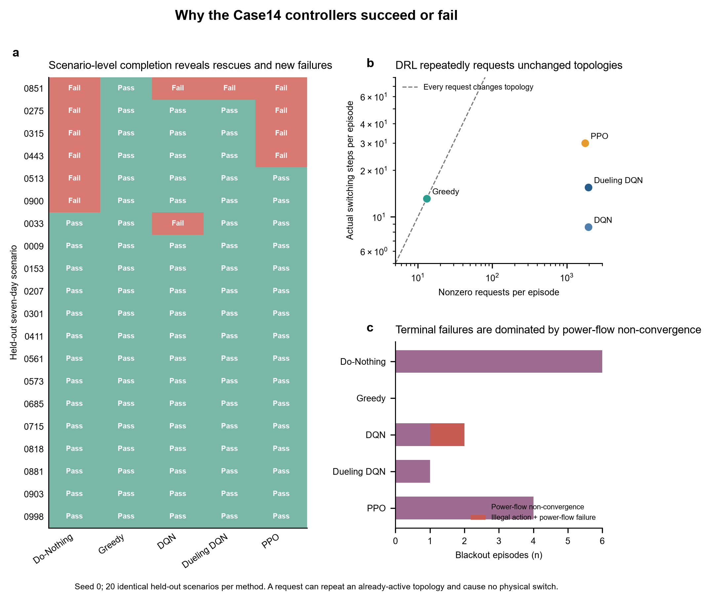
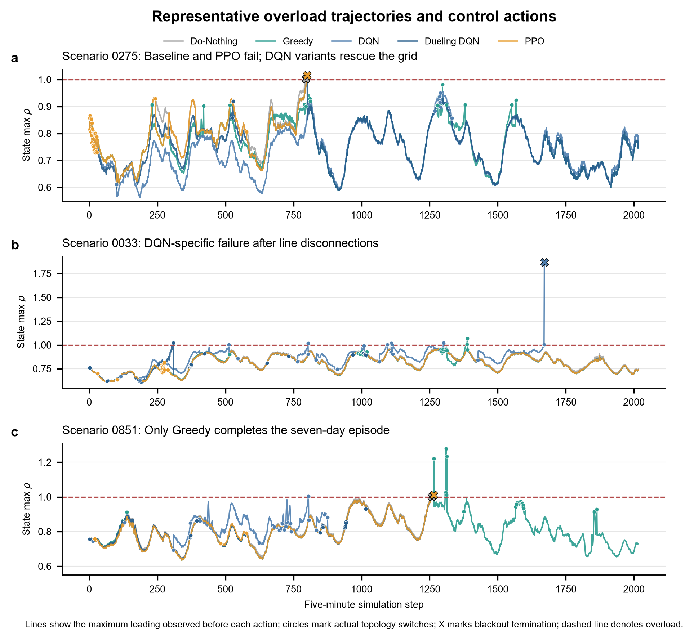

flowchart LR
A["Current grid state"] --> B["DRL agent"]
B --> C["Select one of 21 actions"]
C --> D["Change busbar connection<br/>or Do Nothing"]
D --> E["Power-flow redistribution"]
E --> F["Line loading / grid security"]
F --> A
Deep Reinforcement Learning for Power Grid Topology Control
Benchmarking topology reconfiguration for secure and efficient grid operation
POWER GRID · DEEP REINFORCEMENT LEARNING · TOPOLOGY CONTROL
Deep Reinforcement Learning for Power Grid Topology Control
This study evaluates whether deep reinforcement learning can improve power-grid security by changing substation busbar connections, redistributing power flows, and reducing transmission-line overloads.
IEEE 14-bus
Test system
5 min
Decision interval
21
Available actions
95%
Best DRL completion rate
Research question
Power generation and load demand vary over time, which can create highly loaded operating conditions.
Conceptual correction: market redispatch is not topology control
An initial assumption was that PJM congestion management and substation topology control were the same process. That assumption was incorrect. PJM primarily uses security-constrained generation redispatch, which changes nodal power injections while normally retaining the network topology. In contrast, this study changes busbar connections while the agent does not directly control generation or demand. Both approaches redistribute line flows, but through different control variables. Machine learning and DRL are decision-making tools, not the research problem.
The fundamental research question is therefore:
To what extent can substation topology reconfiguration mitigate transmission-line overloads and maintain secure operation under time-varying generation and demand, without directly redispatching generation or shedding load?
DRL is evaluated as one method for selecting topology actions and is compared with Greedy action-by-action search. These actions do not add transmission lines; they only change existing busbar connections.
How a busbar-switching action changes power flow
The example below illustrates the physical meaning of one topology-control action. Before switching, all equipment is connected to Busbar 1 and Line C is overloaded. The action moves the terminals of Line A and Line B to Busbar 2 while leaving the generator, load, and Line C on Busbar 1. Splitting the original electrical node changes the available flow paths, so the power-flow solution and line-loading ratios are redistributed.

Illustrative example: the MW values in this diagram explain the switching mechanism and satisfy nodal power balance; they are not measurements from a reported Case14 test action. The action changes existing electrical connections and does not add a new transmission line.
Test system
The study uses the IEEE 14-bus power grid implemented in Grid2Op. It contains 14 substations, 20 transmission lines, 6 generators, and 11 loads. Power generation and load demand change every five minutes.

Episode definition: each episode represents seven days, corresponding to 2,016 five-minute time steps.
DRL topology-control framework
At each time step, the agent observes the current grid state and selects one action. The resulting topology determines how power is redistributed before the next decision.
Action-space design
The action space is fixed before DRL training so that all learning algorithms and the Greedy controller are compared using exactly the same actions.
flowchart LR
A["178 candidate<br/>topology actions"] --> B["Test on 20 highly<br/>loaded grid states"]
B --> C["Rank by overload reduction<br/>and valid power flow"]
C --> D["Select best 20<br/>topology actions"]
D --> E["+ 1 Do-Nothing action"]
E --> F["21-action<br/>benchmark space"]
Where the 178 candidate actions come from
Grid2Op generates topology actions by changing the busbar connections within one substation at a time. Each action represents one possible busbar arrangement for the controllable elements in that substation. Changes at different substations are not combined, and no equipment is disconnected. Because Busbar 1 and Busbar 2 are electrically equivalent, the first element is always assigned to Busbar 1 to avoid generating duplicate arrangements. In addition, each busbar that is used must contain at least one transmission-line connection.
For a substation with \(n_s\) connected elements and \(m_s\) line endpoints, the formula first counts all valid assignments, including the unchanged state in which every element remains on Busbar 1:
\[ C_s = 2^{n_s-1} - 2^{n_s-m_s} + 1. \]
Grid2Op keeps these assignments as actions only when at least two valid choices exist. If \(C_s=1\), the only choice is the unchanged state, so Grid2Op returns zero actions:
\[ N_s= \begin{cases} C_s, & C_s\geq2,\\ 0, & C_s=1. \end{cases} \]
S7 makes this distinction clear. It has two elements but only one line endpoint. A split would leave one busbar without a line connection, so the split is invalid. Its only valid assignment is the unchanged state: \(C_7=1\), but Grid2Op returns \(N_7=0\) actions.
| Substation | Elements (\(n_s\)) | Line endpoints (\(m_s\)) | Formula count (\(C_s\)) | Returned actions (\(N_s\)) |
|---|---|---|---|---|
| S0 | 3 | 2 | 3 | 3 |
| S1 | 6 | 4 | 29 | 29 |
| S2 | 4 | 2 | 5 | 5 |
| S3 | 6 | 5 | 31 | 31 |
| S4 | 5 | 4 | 15 | 15 |
| S5 | 7 | 4 | 57 | 57 |
| S6 | 3 | 3 | 4 | 4 |
| S7 | 2 | 1 | 1 | 0 |
| S8 | 5 | 4 | 15 | 15 |
| S9 | 3 | 2 | 3 | 3 |
| S10 | 3 | 2 | 3 | 3 |
| S11 | 3 | 2 | 3 | 3 |
| S12 | 4 | 3 | 7 | 7 |
| S13 | 3 | 2 | 3 | 3 |
| Total | 179 | 178 |
In short, the formula counts 179 valid assignments, but S7 contributes only its unchanged state. Removing that non-action leaves 178 usable single-substation set-bus actions. This is not the number of all possible full-grid topologies.
Some explanations
What is a chronic?
A chronic is a pre-generated time series of load and generation values at five-minute intervals. The dataset contains 1,004 chronics, divided into 702 for training, 150 for validation, and 152 for testing.
How were the stress states selected?
Only the training chronics were used. The grid followed Do-Nothing, and a time step was retained when
\[ \max_i(\rho_i) \geq 0.90. \]
The scan stopped after 20 stress states were found. Both 0.90 and 20 are user-defined settings.
Why were only 108 actions simulated?
At each stress state, the three most heavily loaded lines were identified. Only actions at the endpoint substations of these lines were simulated. Across the 20 states, 108 of the 178 available topology actions passed this filter.
For each simulated action, grid risk was measured as
\[ J = \max_i(\rho_i) + 5\sum_i\max(\rho_i-1,0)^2, \]
and its improvement was
\[ \Delta J = \max(J_{\mathrm{before}}-J_{\mathrm{after}},0). \]
A larger \(\Delta J\) means a greater one-step reduction in grid risk. Actions were ranked by how often and how strongly they reduced \(J\). The best 20 were retained, and A0 was added to create the final 21-action set. Validation and test chronics were not used.
| Number | Meaning |
|---|---|
| 1,004 | Supplied chronics |
| 20 | Training stress states selected |
| 178 | Available topology actions |
| 108 | Actions passing the endpoint filter |
| 20 + A0 | Final 21-action catalogue |
What is the limitation?
The endpoint filter saves computation, but it may exclude useful actions at more distant substations. Because the grid is connected, a distant topology change can still affect line flows. Simulating all 178 actions would give a more complete comparison.
The fixed 21-action catalogue

In panel a, blue cells assign a device to Busbar 1, orange cells assign it to Busbar 2, and grey cells indicate a substation unaffected by that action. A line label such as L9@S12 denotes the endpoint of Line 9 located at Substation 12. In panel b, the lower horizontal axis reports the percentage of the 20 training stress states improved by each action; the upper axis and black diamonds report the mean one-step score reduction.
The table below lists the Busbar 2 members for each action. All other devices at the same substation are explicitly assigned to Busbar 1.
| Action | Substation | Devices assigned to Busbar 2 |
|---|---|---|
| A0 | — | Do-Nothing; no topology change |
| A1 | S4 | L17, L1 |
| A2 | S12 | L9 |
| A3 | S5 | Gen2, Gen3, L7, L9 |
| A4 | S1 | L2, L4 |
| A5 | S1 | L2, L4, L0 |
| A6 | S5 | Gen3, L7, L9, L17 |
| A7 | S4 | L17, L6 |
| A8 | S4 | L1, L4 |
| A9 | S1 | Gen0, L4, L0 |
| A10 | S1 | Gen0, L3 |
| A11 | S1 | Gen0, L2, L4 |
| A12 | S1 | L3 |
| A13 | S5 | Gen2, Gen3, L7, L8, L17 |
| A14 | S5 | Gen3, L7, L17 |
| A15 | S4 | L17, L4 |
| A16 | S4 | L17, L1, L6 |
| A17 | S12 | Empty; restore all S12 devices to Busbar 1 |
| A18 | S5 | Empty; restore all S5 devices to Busbar 1 |
| A19 | S4 | Empty; restore all S4 devices to Busbar 1 |
| A20 | S1 | Empty; restore all S1 devices to Busbar 1 |
These are set-point actions rather than toggle commands. Repeating an action after its target topology is already active produces another nonzero action request but no new physical switch.
Methods compared
DQNValue-based DRL baseline
Double DQNDouble-estimator DQN variant
Dueling DQNDueling value–advantage architecture
PPOPolicy-optimization method
A2CActor–critic method
Dueling Double DQNCombined DQN variant
GreedyNon-learning baseline
Do-NothingNo-control baseline
How each controller makes decisions
Do-Nothing
Do-Nothing always selects A0:
\[a_t=A0.\]
It has no network, training objective, or learning hyperparameters. Its reported reward is still calculated with the common environment reward. It measures how often the grid can complete seven days without active topology control.
Greedy
Greedy is a model-based, one-step controller rather than a DRL method. If the current maximum loading is no greater than 0.90, it selects A0. Otherwise, it uses Grid2Op to simulate each of the 21 actions one step ahead and minimizes
\[ J(s_t,a)=\max_i\rho_{i,t+1} +5\sum_i[\max(\rho_{i,t+1}-1,0)]^2 +0.01I(a\ne A0). \]
An illegal or immediately terminal simulation receives an additional cost of 1,000. The Greedy score \(J\) is used only to select an action; the resulting episode is evaluated with the same environment reward as every other controller.
Greedy decision score versus common reward
The two quantities have different roles. At each five-minute step, Greedy simulates the candidate actions, calculates \(J(s_t,a)\) for each simulation, and executes the action with the lowest score:
\[ a_t=\arg\min_a J(s_t,a). \]
The common reward does not participate in this choice. It is calculated only after the selected action has been executed in the environment. The step rewards are then summed to report the final episode reward and to compare Greedy with the other methods. Greedy does not use these rewards to update a model.
flowchart LR
A[Current grid state] --> B[Simulate the 21 actions]
B --> C[Calculate internal score J]
C --> D[Execute the action with minimum J]
D --> E[Calculate the common reward]
E --> F[Accumulate the reported episode reward]
| Quantity | Determines the Greedy action? | Used in the reported episode reward? |
|---|---|---|
| Internal score \(J\) | Yes | No |
| Common environment reward \(r_t\) | No | Yes |
This distinction also separates Greedy from the DRL agents. Greedy directly minimizes a one-step power-flow score, whereas DQN, PPO, and A2C use the common reward during training to learn a policy that seeks higher discounted return.
| Greedy parameter | Value | Purpose |
|---|---|---|
| Activation threshold | 0.90 | Avoid simulations while the grid is safely loaded |
| Look-ahead horizon | 1 step | Predict the next five-minute state |
| Candidate actions | 21 | Test the shared action catalogue |
| Overload weight | 5.0 | Prefer actions that reduce overload |
| Nonzero-action cost | 0.01 | Prefer A0 when two actions have similar effects |
| Illegal/terminal cost | 1,000 | Reject unsafe simulated actions |
DQN family
DQN learns the expected discounted return of each state-action pair:
\[Q(s_t,a_t)=\mathbb{E}\left[\sum_{k=0}^{\infty}\gamma^k r_{t+k}\right].\]
At evaluation, the network outputs 21 Q-values and selects the largest.
Online and Target networks
Every DQN variant in this study contains two Q-networks. They are not two separate agents. They are two copies of the same network architecture with different roles:
| Network | Main role | How it changes |
|---|---|---|
| Online network | Select actions and learn \(Q_{\mathrm{online}}(s,a)\) | Updated by gradient descent during training |
| Target network | Provide a stable value for the learning target | Held fixed, then replaced by the Online weights every 2,000 steps |
The Online network changes frequently. If it were also used as a continuously changing target, learning could become unstable. The delayed Target network makes the target value more stable. During evaluation, only the Online network is needed to select an action:
\[ a_t=\arg\max_a Q_{\mathrm{online}}(s_t,a). \]
flowchart LR
S[Current state] --> O[Online network]
O --> A[Select one of 21 actions]
O --> L[Huber-loss update]
T[Target network] --> L
O -. copy weights every 2,000 steps .-> T
Standard DQN uses the target
\[ y_t=r_t+\gamma(1-d_t)\max_{a'}Q_{\mathrm{target}}(s_{t+1},a'), \]
and minimizes the Huber loss between \(Q_{\mathrm{online}}(s_t,a_t)\) and \(y_t\).
Double DQN lets the online network select the next action and the target network evaluate it:
\[ a^*=\arg\max_{a'}Q_{\mathrm{online}}(s_{t+1},a'),\qquad y_t=r_t+\gamma(1-d_t)Q_{\mathrm{target}}(s_{t+1},a^*). \]
Dueling DQN changes the output architecture to
\[ Q(s,a)=V(s)+A(s,a)-\frac{1}{21}\sum_{a'}A(s,a'), \]
where \(V(s)\) measures the value of the grid state and \(A(s,a)\) measures the relative advantage of each action. Dueling Double DQN combines this architecture with the Double DQN target.
All four DQN variants use both networks. Standard DQN and Dueling DQN use the Target network to find the largest next-state Q-value. Double DQN and Dueling Double DQN use the Online network to select the next action and the Target network to evaluate that action. In the Dueling variants, both networks use the same value–advantage architecture. PPO and A2C do not use this Online–Target Q-network pair; they instead use Actor and Critic networks.
| DQN-family parameter | Value | Purpose |
|---|---|---|
| Hidden layers | [128, 128], ReLU | Map the observation to 21 action values |
| Learning rate | 0.0001 | Set the Adam optimizer update size |
| Discount factor \(\gamma\) | 0.99 | Control the importance of future rewards |
| Replay-buffer size | 100,000 | Store past transitions for reuse |
| Batch size | 128 | Number of replay samples per update |
| Learning starts | 5,000 steps | Fill the replay buffer before learning |
| Training frequency | Every 4 steps | Control network-update frequency |
| Target update interval | 2,000 steps | Copy online weights to the target network |
| Gradient limit | 10.0 | Reduce unstable gradient updates |
| Exploration \(\epsilon\) | 1.0 to 0.05 | Move from random exploration to learned actions |
| Exploration decay | 100,000 steps | Set how quickly \(\epsilon\) decreases |
| Loss | Huber loss | Reduce sensitivity to very large temporal-difference errors |
The four variants use the same settings. They differ only in the Double and Dueling switches:
| Method | Double target | Dueling architecture |
|---|---|---|
| DQN | No | No |
| Double DQN | Yes | No |
| Dueling DQN | No | Yes |
| Dueling Double DQN | Yes | Yes |
PPO
PPO is an on-policy actor–critic method. The actor outputs a probability for each of the 21 actions, while the critic estimates \(V(s)\). Generalized advantage estimation uses \(\gamma=0.99\) and \(\lambda=0.95\). PPO limits each policy update with
\[ L_{\mathrm{clip}}= \mathbb{E}\left[ \min\left(r_t(\theta)\hat A_t, \operatorname{clip}(r_t(\theta),0.8,1.2)\hat A_t\right) \right], \]
where \(r_t(\theta)\) is the new-to-old action-probability ratio. Its optimization combines the clipped policy objective, a value loss, and an entropy bonus.
| PPO parameter | Value | Purpose |
|---|---|---|
| Hidden layers | [128, 128] | Build the actor and critic networks |
| Learning rate | 0.0003 | Set the Adam update size |
| Discount factor \(\gamma\) | 0.99 | Weight future rewards |
| GAE \(\lambda\) | 0.95 | Balance bias and variance in advantage estimates |
| Rollout length | 1,024 steps | Collect on-policy data before updating |
| Batch size | 128 | Split each rollout into mini-batches |
| Epochs per rollout | 10 | Reuse each rollout for ten optimization passes |
| Clip range | 0.20 | Limit large policy changes |
| Entropy coefficient | 0.01 | Encourage action exploration |
| Value-loss coefficient | 0.5 | Weight critic learning |
| Gradient limit | 0.5 | Stabilize optimization |
| Advantage normalization | Enabled | Standardize advantages before updating |
A2C
A2C is also an actor–critic method, but it has no PPO clipping and updates after much shorter rollouts. Its objective can be summarized as
\[ L_{\mathrm{A2C}}= -\mathbb{E}[\log\pi(a_t|s_t)\hat A_t] +0.5L_{\mathrm{value}}-0.01H(\pi). \]
| A2C parameter | Value | Purpose |
|---|---|---|
| Hidden layers | [128, 128] | Build the actor and critic networks |
| Learning rate | 0.0007 | Set the RMSprop update size |
| Discount factor \(\gamma\) | 0.99 | Weight future rewards |
| GAE \(\lambda\) | 0.95 | Control advantage-estimation bias and variance |
| Rollout length | 20 steps | Update frequently using short trajectories |
| Entropy coefficient | 0.01 | Encourage exploration |
| Value-loss coefficient | 0.5 | Weight critic learning |
| Gradient limit | 0.5 | Stabilize optimization |
| RMSprop epsilon | \(10^{-5}\) | Improve numerical stability |
| Advantage normalization | Disabled | Use the Stable-Baselines3 A2C default |
Why did the methods behave differently?
What the results directly show
| Method | What happened in the current test |
|---|---|
| Greedy | Completed all 20 scenarios, but needed the most computation time |
| Dueling DQN | Achieved the best completion rate among the learned controllers |
| A2C | Made no real topology changes and produced the same result as Do-Nothing |
| Double DQN variants | Requested many nonzero actions, but few requests changed the physical topology |
These are measured results. The explanations below are possible reasons, not proven facts.
Possible reasons in simple terms
Why was Greedy safe but slow?
When the grid became stressed, Greedy used the simulator to try the 21 candidate actions before choosing one. This made its decisions reliable, but each decision required many extra power-flow calculations.
Why might Dueling DQN work well?
Dueling DQN learns two questions separately: Is the current grid state safe or dangerous? and Which action is better in this state? Most time steps were already safe, so this separation may have helped the network learn when an action was truly needed.
Why did A2C behave like Do-Nothing?
Most time steps gave a positive survival reward without any switching. A2C may therefore have learned that A0 was usually the safest choice. Its short 20-step updates may also have made rare dangerous events harder to learn from.
Why were many Double DQN requests ineffective?
The actions are set-point commands. If an action requests a topology that is already active, the request is nonzero but no switch occurs. The DRL input contains line status and power-flow measurements, but not the complete Busbar 1/2 assignment (topo_vect). The agent may therefore repeat an action because it cannot directly see that the requested topology is already active.
Why is Greedy less affected by missing topo_vect?
Greedy obtains the full Grid2Op state and simulates each action before execution. It can observe the predicted result even when the smaller DRL input does not describe every busbar assignment explicitly.
NoteMeasured result versus possible explanation
The benchmark tells us which method performed better. It does not yet prove why. For example, Dueling DQN’s design is a reasonable explanation for its result, but the current single-seed experiment cannot prove that the Dueling architecture caused the improvement.
How to check these explanations
| Question | Simple follow-up test |
|---|---|
| Is Dueling DQN consistently better? | Train each method with at least three seeds |
| Does missing topology information cause repeated requests? | Add topo_vect and train again |
| Is an algorithm stuck on one action? | Count how often it selects A0–A20 |
| Does a switch actually improve the grid? | Compare maximum \(\rho\) before and after each switch |
| Can repeated commands be reduced? | Mask an already-active action or add a small request penalty |
Until these tests are completed, the performance differences are confirmed, but their causes should be presented as possible explanations.
Evaluation metrics
The methods are evaluated using six complementary indicators:
| Metric | Interpretation | Desired direction |
|---|---|---|
| Completion Rate | Percentage of test episodes completing all 2,016 steps | Higher |
| Blackout Rate | Percentage of episodes ending early because the grid can no longer operate | Lower |
| Mean Episode Length | Average number of operating steps completed | Higher |
| Overload-Step Ratio | Percentage of operating steps with at least one overloaded line | Lower |
| Mean Actual Switching Steps | Average number of time steps in which topology is actually changed | Context dependent |
| Mean Inference Time | Average computation time required to select one action | Lower |
Key results
100%
Greedy completion rate
Highest security performance in the benchmark.
95%
Dueling DQN completion rate
Best-performing DRL method.
0.055%
Dueling DQN overload ratio
Second lowest overload burden after Greedy.
0.781 ms
Dueling DQN inference time
Sub-millisecond online action selection.

The figure summarizes three aspects of performance:
a. Episode completion rate. Higher is better. Greedy reaches 100%, while Dueling DQN is the strongest DRL method at 95%.
b. System overload burden. Lower is better. Greedy has the lowest overload-step ratio (0.0446%), followed by Dueling DQN (0.0550%).
c. Safety–computation trade-off. A favorable method combines high completion rate with low inference time. Dueling DQN provides the strongest safety–speed balance among the DRL methods, whereas Greedy is safer but substantially slower in this benchmark.
Benchmark note: the supplied comparison figure reports seed = 0, 20 fixed held-out seven-day chronics, and 2,016 steps per chronic. The error bars in panel (a) are Wilson 95% intervals across chronics and do not represent training-seed uncertainty.
Detailed performance
| Method | Completion Rate | Blackout Rate | Mean Episode Length | Overload-Step Ratio | Mean Actual Switching Steps | Mean Inference Time |
|---|---|---|---|---|---|---|
| Greedy | 100% | 0% | 2016.0 | 0.0446% | 13.15 | 38.195 ms |
| Dueling DQN | 95% | 5% | 1978.4 | 0.0550% | 15.55 | 0.781 ms |
| DQN | 90% | 10% | 1961.2 | 0.0750% | 8.60 | 0.266 ms |
| PPO | 80% | 20% | 1767.8 | 0.0591% | 30.00 | 0.505 ms |
| Double DQN | 75% | 25% | 1746.1 | 0.2560% | 40.75 | 0.905 ms |
| A2C | 70% | 30% | 1646.3 | 0.0889% | 0 | 0.500 ms |
| Do-Nothing | 70% | 30% | 1646.3 | 0.0889% | 0 | 0.001 ms |
| Dueling Double DQN | 10% | 90% | 1045.9 | 0.7371% | 73.25 | 0.743 ms |
Mechanism-level diagnostic analysis
The aggregate benchmark identifies the strongest methods but does not explain why an episode succeeds or fails. A second evaluation therefore recorded one diagnostic row at every five-minute step for five representative controllers: Do-Nothing, Greedy, DQN, Dueling DQN, and PPO. The log contains the selected action, affected substation, maximum line-loading ratio, overloaded-line IDs, actual topology changes, line disconnections, illegal-action flags, terminal exceptions, and inference time.
What the 20 test scenarios represent
Each test scenario is a pre-existing Grid2Op chronic directory containing one seven-day sequence of generation and load values. For example, 0851 identifies the folder chronics/0851; it is a dataset identifier, not a random seed or difficulty score. The 20 fixed held-out scenarios used here were
0009, 0033, 0153, 0207, 0275, 0301, 0315, 0411, 0443, 0513,
0561, 0573, 0685, 0715, 0818, 0851, 0881, 0900, 0903, 0998.The underlying generation and load trajectories are read from the stored CSV files; they are not regenerated during evaluation. All methods start from the same scenario and use the same exogenous time series, enabling paired scenario-level comparison.
Scenario outcomes, action efficiency, and terminal failures

Panel a shows which controllers completed each seven-day chronic. Greedy rescued all six Do-Nothing failures. Dueling DQN rescued five without creating a new failure, whereas DQN rescued five baseline failures but failed in Scenario 0033, which Do-Nothing completed. PPO rescued two baseline failures.
Panel b distinguishes an action request from an actual switching step. At each five-minute step, the controller selects exactly one of A0–A20. Selecting A1–A20 counts as one nonzero request. It counts as an actual switching step only if the network topology or line status physically changes after execution. One requested action may set several devices within one substation, but the controller cannot request two sequential actions within the same five-minute step.
| Method | Nonzero requests per episode | Actual switching steps per episode | Request-to-switch effectiveness |
|---|---|---|---|
| Greedy | 13.15 | 13.15 | 100.000% |
| Dueling DQN | 1959.40 | 15.55 | 0.794% |
| DQN | 1960.10 | 8.60 | 0.439% |
| PPO | 1767.75 | 30.00 | 1.697% |
| Do-Nothing | 0 | 0 | Not applicable |
Request-to-switch effectiveness is defined as
\[ \eta_{\mathrm{action}} = \frac{N_{\mathrm{actual\ switching\ steps}}} {N_{\mathrm{nonzero\ requests}}}\times100\%. \]
The low DRL values do not mean that multiple actions were executed every five minutes. Instead, the learned policies repeatedly selected set-point actions whose target topology was already active. The present reward penalizes actual switching, but it does not directly penalize a repeated nonzero request that leaves the topology unchanged. Greedy avoids this pattern because it selects A0 under low stress and requests a nonzero action only when its one-step search selects a physical topology change.
Panel c reports the terminal exceptions. Most blackout episodes ended with AC power-flow non-convergence. This exception describes how Grid2Op stopped, not necessarily the complete initiating mechanism; the preceding overload, disconnection, and action sequence must also be examined.
Representative overload trajectories

Each curve reports the maximum line-loading ratio observed before the next action,
\[ \rho_{\max,t}=\max_i(\rho_{i,t}). \]
The red dashed line marks the overload threshold ( \(\rho=1\)), circles mark actual topology switches, and an X marks blackout termination. Scenario 0275 illustrates a baseline failure rescued by both DQN variants. Scenario 0033 isolates a DQN-specific failure. Scenario 0851 is the hardest example in this subset: only Greedy completed all 2,016 steps.
DQN failure sequence in Scenario 0033
The DQN failure classification was taken from the Grid2Op step log rather than inferred from the completion curve alone.
| Step | Selected action | Logged event |
|---|---|---|
| 1669 | A17 | Line 9 was slightly overloaded; the grid continued operating. |
| 1670 | A9 | Lines 9 and 13 changed to disconnected status; maximum loading rose from approximately 1.00 to 1.86. |
| 1671 | A2 | Grid2Op rejected the request as illegal because it affected the status of more than one line ([9, 13]); the episode did not yet terminate. |
| 1672 | A2 | The illegal-action warning recurred and the AC power flow failed to converge after ten Newton–Raphson iterations. |
Across the complete 20-scenario diagnostic run, DQN produced two illegal-action flags, both in Scenario 0033. Do-Nothing, Greedy, Dueling DQN, and PPO produced none. An illegal request is normally ignored by Grid2Op and therefore should not be interpreted as proof that the request alone caused the blackout. A more bounded interpretation is that the grid had already entered a severely stressed post-disconnection state, and the repeated illegal request failed to provide a feasible recovery action before power-flow non-convergence.
Overload is not identical to blackout
A line is overloaded when ( \(\rho > 0.90\)), but this does not necessarily terminate the episode. Grid2Op tracks consecutive overload duration for each line and may disconnect a line after the allowed duration, or immediately under sufficiently severe overload. The remaining network is then solved again. The episode ends only if the resulting grid can no longer be operated, for example because of cascading disconnections, islanding, or power-flow non-convergence. This is why Greedy can show a small nonzero overload-step ratio while still achieving zero blackouts in the current 20 scenarios.
Interpretation limits and next validation steps
The mechanism logs deepen the seed-0 comparison, but they do not yet establish that a particular neural architecture intrinsically causes the observed ranking. The current evidence is limited to one training seed and 20 of approximately 152 held-out test chronics. In particular, Dueling DQN’s value–advantage decomposition is a plausible reason for its strong performance when many actions have similar or redundant effects, but that explanation remains a hypothesis until it is tested across multiple seeds and controlled ablations.
The next validation stage should therefore:
- train DQN, Dueling DQN, and PPO with at least seeds 0–2;
- evaluate each trained model on the complete fixed test split;
- report paired scenario outcomes and confidence intervals;
- compare the original policy with an invalid/redundant-action mask or a small repeated-request penalty;
- classify failure sequences into persistent overload, protection-driven line loss, illegal action, islanding, and power-flow non-convergence.
Main findings
TipTakeaway 1 — Best overall security
Greedy achieves the highest episode completion rate and the lowest overload burden, making it the strongest security benchmark in the current comparison.
ImportantTakeaway 2 — Best DRL method
Dueling DQN is the strongest DRL method, reaching a 95% completion rate and a 0.0550% overload-step ratio while maintaining sub-millisecond inference time.
NoteTakeaway 3 — Fast DRL decision making
DQN has the lowest inference overhead among the tested DRL methods and requires fewer actual topology-switching steps than the other active DRL controllers in the supplied results.
WarningTakeaway 4 — Policy instability
Dueling Double DQN performs poorly in the supplied benchmark, with a 10% completion rate, 90% blackout rate, and the highest overload-step ratio, indicating significant policy instability in this experiment.
Research message
This benchmark demonstrates a clear distinction between maximum security performance and fast learned decision making. Greedy provides the strongest overall security, whereas Dueling DQN offers the most competitive DRL balance between episode survival, overload mitigation, and online inference speed.
This page is structured as a research showcase: problem → system → method → benchmark → results → findings. It can be expanded later with additional training seeds, hyperparameter ablations, the complete held-out test split, or larger power-grid cases.